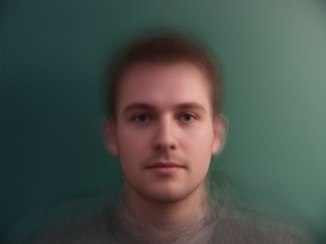
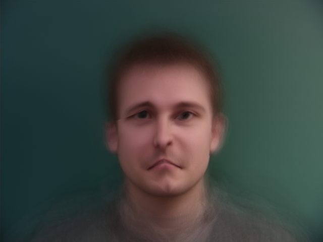
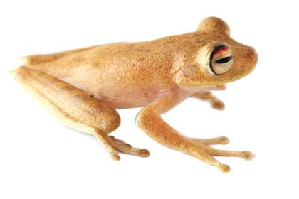
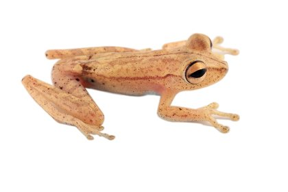
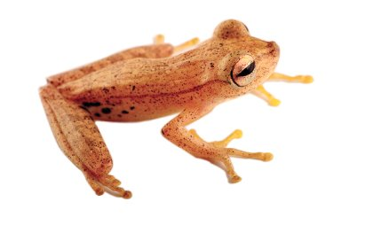
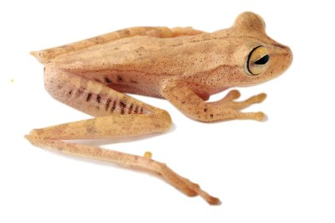
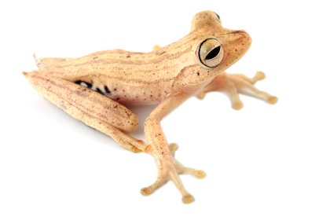
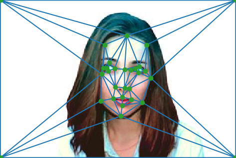
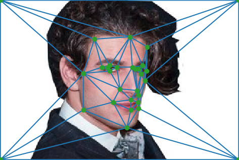

|
||||
When considering populations, statistical tools, such as the mean and median, allow the formulation of various characterizations. It is extremely important to consider, however, that such statistics only describe a given population as an abstracted whole, and not as individuals. In fact, blindly relying on statistics leads, more often than not, to problematic, and sometimes outright wrong, conclusions. Individuals must always be looked as such; statistics are only here to complement the view.
The following pictures depict a population of Danish computer scientis who had the courtesy to not only make their pictures available, but also label them appropriately for use in computer vision. Notice that the calculated mean face is very different from every input face. To assume that every Danish computer scientist looks close to the mean face is to assume something clearly wrong.
That said, statistical tools do have their use, and such use is not, by any means, confined to prediction. For example, by using the mean face, once can extrapolate another face, to create new faces and caricatures. Indeed, art with statistics!
|
|
||||
|

— starring in Dijkstra 11 |
|
— a film about gambling, passion, and efficient Monte Carlo Integration |
|

— extrapolation of smiling mean from mean [t = 2] |
— extrapolation of smiling mean from mean [t = -2] |

— not as great as MJ's Black & White, but getting there |
For most of human history, it was widely held that individuals came after types. Zebras came after "zebrahood". A zebra was a zebra only because it belonged to this abstract group called "zebras", characterized by some pre-existing essence called "zebrahood". In fact, the famous Linnean taxonomy, which biologists use to classify individuals into species, is a by-product of this idea. Carl Linnaeus, the inventor of this system, believed that God created every organism in the universe according to a model, and therefore could be studied and classified according to this model.
However, since Darwin's Theory of Evolution, the story began to change. Rather than representing a type, individuals are the ones who make the type. Every individual, different in themselves, develops characteristics, which, macroscopically, when shared by a number of other individuals makes these individuals a species. Some of the most compelling evidence for this alternative explanation stems from the fact that even within species, individuals vary significantly. In certain cases, it becomes possible to talk about "microspecies". For instance, the Hypsiboas calcaratus-fasciatus species complex is known to include at least six types of closely related, yet different, treefrogs. Notice the variation in color, size, and body composition.
|  |  |  |

|
|  |  |
Images taken from Systematics of Treefrogs by Caminer and Ron (2014).
Maurits Cornelis Escher was a Dutch artist who lived in the 20th century, and is known for his mathematics-inspired pieces. One of my favorite works of his is a tessellation of birds and fishes, giving the impression of motion. In the following piece, I tried to recreate such an effect, using image morphing, rather than woodcutting.

|

|
|  |  |